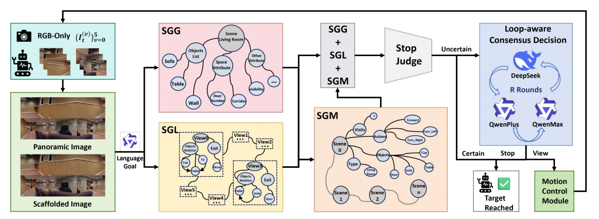
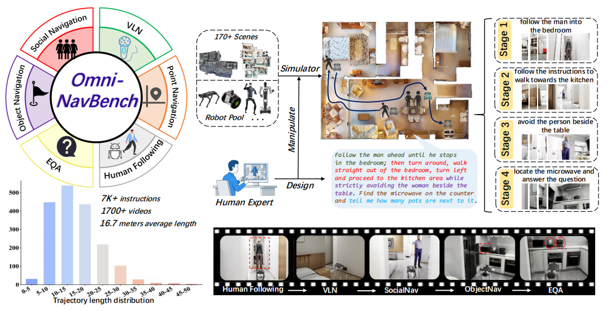

OmniNavBench was accepted to RSS 2026.
Incoming M.S. Student · NLPR · CASIA
Yikai Xue 薛一凯
I study how embodied agents can understand, remember, and act in the physical world.
My current interests center on World Action Models, with a foundation in embodied navigation, structured scene memory, and multimodal decision-making.
Updates
Recent news
SGC-Nav was accepted to IROS 2026.
Joining NLPR at the Institute of Automation, Chinese Academy of Sciences, as an M.S. student.
01 / Profile
About
I am an incoming master’s student at the National Laboratory of Pattern Recognition (NLPR), Institute of Automation, Chinese Academy of Sciences.
I began my undergraduate study in the School of Life Sciences at Shandong University and transferred to the School of Control Science and Engineering in my second year. This path shaped my interest in intelligent systems that connect perception, internal models, and action.
My undergraduate research focused on embodied navigation, including RGB-only object navigation, scene-graph memory, multi-model consensus, and unified navigation evaluation. I am now interested in World Action Models that can learn predictive, actionable representations for general embodied agents.
02 / Background
Research experience
Jul. 2025 – Feb. 2026
Research Intern
AutoLab, School of Artificial Intelligence, Shanghai Jiao Tong University
Worked on OmniNavBench, a unified benchmark for cross-skill and cross-embodiment navigation, advised by Prof. Zhipeng Zhang.
Undergraduate Researcher
School of Control Science and Engineering, Shandong University
Developed SGC-Nav for mapless RGB-only object navigation, advised by Prof. Chaoqun Wang.
03 / Research
Selected publications

IROS 2026Embodied Navigation · Scene Graph Memory
SGC-Nav: Scene Graph Conditioned Multi-LLM Consensus for Mapless Zero-Shot Object Navigation
An RGB-only navigation framework that turns panoramic observations into an online scene-graph memory and uses loop-aware multi-LLM consensus for robust exploration and stopping.
Project
First author

RSS 2026General-Purpose Navigation · Benchmark
OmniNavBench: A Unified Benchmark for General-Purpose Navigation
OmniNavBench evaluates cross-skill coordination across wheeled, quadrupedal, and humanoid robots through composite tasks and human-teleoperated expert trajectories.
04 / Education
Education
Expected 2027 – 2030
Institute of Automation, Chinese Academy of Sciences
Incoming M.S. student, National Laboratory of Pattern Recognition (NLPR).
2023 – 2027
Shandong University
B.Eng. candidate in Automation, School of Control Science and Engineering.
05 / Recognition
Selected honors
National Scholarship for Undergraduate Students
Shandong University Special Talent Award
Research & Innovation
Shandong University Outstanding Student Scholarship
Shandong University Special Talent Award
Sports Literacy
06 / Contact
Let’s connect.
I am always happy to discuss embodied intelligence, world models, and research collaborations.